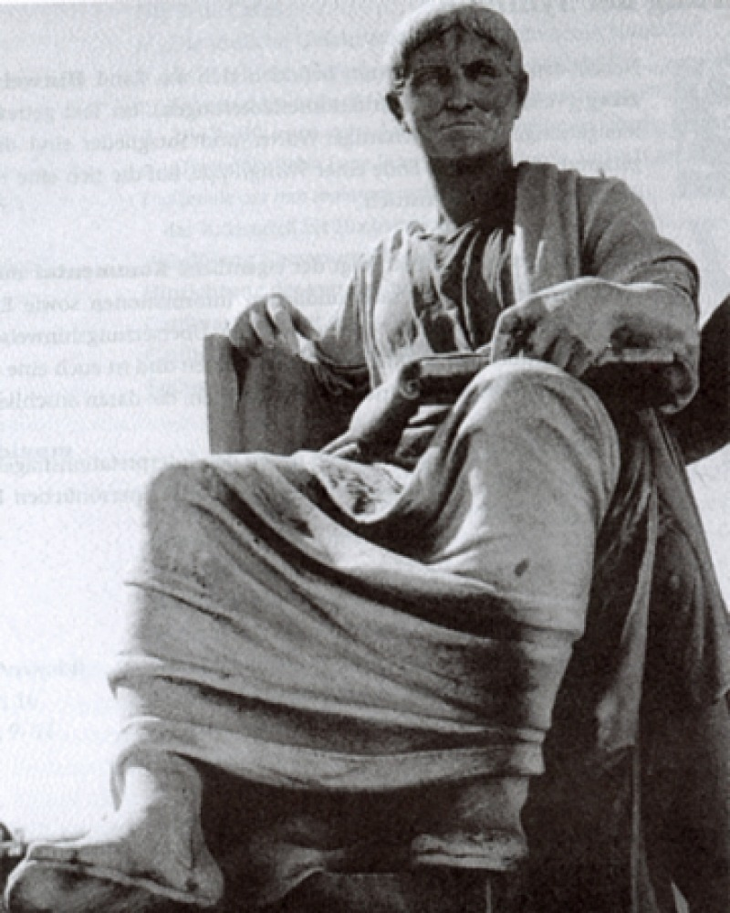

Omnis homines qui sese student praestare ceteris animalibus summa ope niti decet ne vitam silentio transeant veluti pecora, quae natura prona atque ventri oboedientia finxit. 2 Sed nostra omnis vis in animo et corpore sita est; animi imperio, corporis servitio magis utimur; alterum nobis cum dis, alterum cum beluis commune est. 3 Quo mihi rectius videtur ingeni quam virium opibus gloriam quaerere et, quoniam vita ipsa qua fruimur brevis est, memoriam nostri quam maxume longam efficere; 4 nam divitiarum et formae gloria fluxa atque fragilis est, virtus clara aeternaque habetur.
A bust of famed Roman historian and Governor of Numidia, C. Sallusti Crispi.